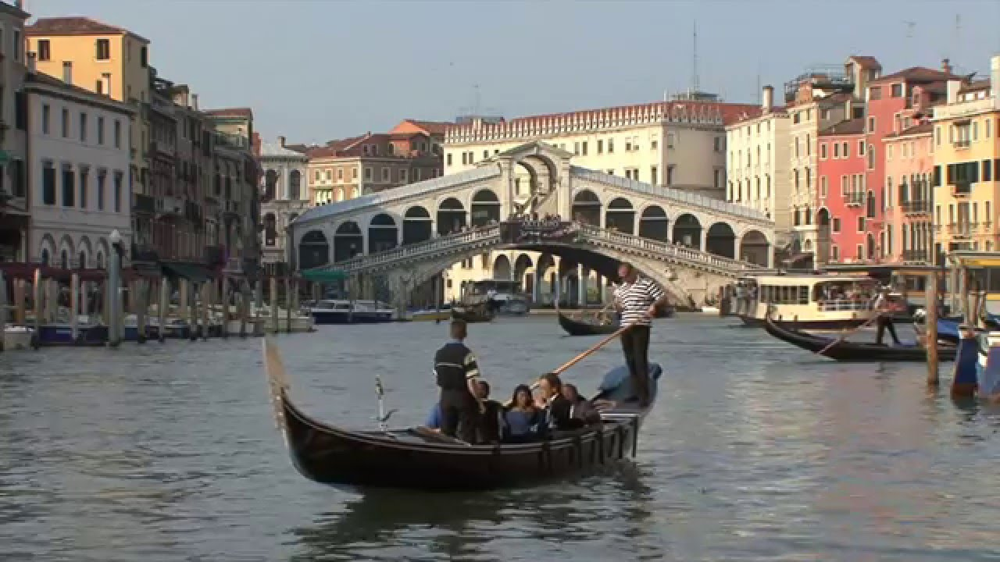

The Floating City

Venice is a city in northeastern Italy and the capital of the Veneto region. It is situated on a group of 118 small islands that are separated by canals and linked by over 400 bridges. The islands are located in the shallow Venetian Lagoon, an enclosed bay that lies between the mouths of the Po and the Piave rivers (more exactly between the Brenta and the Sile). In 2018, 260,897 people resided in the Comune di Venezia, of whom around 55,000 live in the historical city of Venice (centro storico). Together with Padua and Treviso, the city is included in the Padua-Treviso-Venice Metropolitan Area (PATREVE), which is considered a statistical metropolitan area, with a total population of 2.6 million.
The name is derived from the ancient Veneti people who inhabited the region by the 10th century BC. The city was historically the capital of the Republic of Venice for a millennium and more, from 697 to 1797. It was a major financial and maritime power during the Middle Ages and Renaissance, and a staging area for the Crusades and the Battle of Lepanto, as well as an important center of commerce—especially silk, grain, and spice, and of art from the 13th century to the end of the 17th. The city-state of Venice is considered to have been the first real international financial center, emerging in the 9th century and reaching its greatest prominence in the 14th century. This made Venice a wealthy city throughout most of its history. After the Napoleonic Wars and the Congress of Vienna, the Republic was annexed by the Austrian Empire, until it became part of the Kingdom of Italy in 1866, following a referendum held as a result of the Third Italian War of Independence.
Venice has been known as "La Dominante", "La Serenissima", "Queen of the Adriatic", "City of Water", "City of Masks", "City of Bridges", "The Floating City", and "City of Canals". The lagoon and a part of the city are listed as a UNESCO World Heritage Site. Parts of Venice are renowned for the beauty of their settings, their architecture, and artwork. Venice is known for several important artistic movements—especially during the Renaissance period—has played an important role in the history of symphonic and operatic music, and is the birthplace of Antonio Vivaldi.
Although the city is facing some challenges (including an excessive number of tourists and problems caused by pollution, tide peaks and cruise ships sailing too close to buildings), Venice remains a very popular tourist destination, a major cultural centre, and has been ranked many times the most beautiful city in the world. It has been described by the Times Online as one of Europe's most romantic cities and by The New York Times as "undoubtedly the most beautiful city built by man".